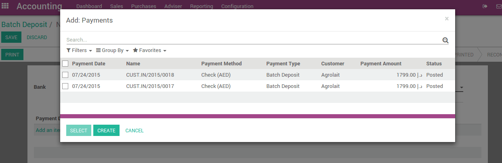

当你们公司集中从客户收到支票后,他们往往会把这些钱批次地放到银行账户。这钱已经以一个物理形式收到了,你的公司的人必须手动把支票登记到银行。
银行将要求填写一张包含支票或现金的细节的交易事项的存款单证(也称为存款单).
银行对账单将反映总计和存款单的参考信息,而不是个人支票。
YuanCloud帮助您准备和打印你的押金单据,之后与银行对账单核销就很容易了。
配置
安装批量缴存功能
为了使用批处理存款功能,你需要安装模块**批存款**。
注解
通常, 如果支票在你的国家被广泛使用,这个模块是自动安装的。
验证 Batch Deposit 功能是否安装,去:menuselection:[UNKNOWN NODE title_reference] menu of the accounting application。检查功能: Allow batch deposit。

在银行账户激活该功能
一旦你已经安装了这个特性,YuanCloud将自动激活你的银行账户内的押金功能。
哪个银行账户可以做批处理押金,哪些不能,这个控制可以去账内定义,通常被称为“支票”或“银行”(参见:doc:[UNKNOWN NODE title_reference],会计应用程序:menuselection:[UNKNOWN NODE title_reference].
在 Advanced Settings 项卡中,**Miscellaneous**节,设置借记方式为**Batch Deposit**。

如果你在借记方式中检查**Batch Deposit**,这意味着付款时使用这个账(当收款或是付款时称为支付方式), 将适用于之后的押金批处理。
从收到支票到银行
收到客户支票
一旦你将登记收到的支票,作为保证金登记在银行账上。一旦你选择的银行账户(或支票账户),YuanCloud建议您使用批处理。选择这个选项,如果你计划批处理。

在备忘录字段，你可以设置支票的参考。
注解
可在此菜单中登记付款:menuselection::[UNKNOWN NODE title_reference],或直接在相关发票上登记,使用 Register Payment 按钮。
预备批量缴存
从会计程序,进入菜单:menuselection ,并创建一个新的**Batch Deposit**.

选择银行,然后选择你想要添加的付款(支票)。默认情况下,YuanCloud建议你保存所有的支票。这样,您就可以确认你不要忘记或丢失支票。
然后你可以打印批存款,这将是非常有用的, 银行通常需要。
使用银行对账单调节缴存
当核销银行对账单时, 对账单中将会看到存款单的号码。核销运行时,用户将能够选择匹配的批处理存款。

如果您选择一批存款,YuanCloud将自动填充所匹配的支票存款。(下面的例子中有2账支票是作为批处理的)

排查
在银行对帐单上没有此明细行？
如果在银行对账单中没有批存款链接,可能是两个原因:
安装批存款功能后,您需要重新加载页面,这样浏览器知道这个新特性。点击浏览器的刷新按钮。
你的银行账户内没有创建批处理存款。
假如支票被拒绝会发生什么?
如果银行对账单的金额小于实际批存款的金额,它可能意味着你的某一张支票已经被拒绝了。
在这种情况下,在银行对账单中,点击相应的行并删除.